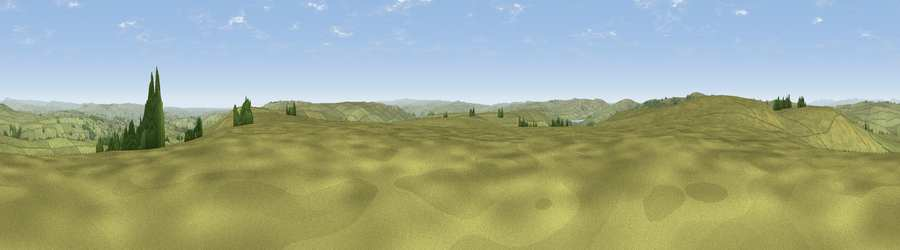

Viewpoint near Stanbury
#16386 in England · top 25% of its area beats it · near StanburyWhere it is
The exact computed spot (SD 98375 34775). Click the marker for map links.
The view, rendered

A 360° render of this exact spot computed from the terrain model, tree cover and land cover — summer colours, afternoon light, calibrated against photographs of famous viewpoints. Real trees, hedges and buildings will differ in detail.
The panorama
Grey silhouette: terrain skyline in each direction (720 bearings, Earth curvature and refraction included). Dashed green: skyline with trees (+15 m) and buildings (+8 m) as obstacles. Blue strip: how far the ground is visible on each bearing.
Where the view opens
Wedge length = distance to the farthest visible ground on that bearing (vegetation-aware). Rings at 10, 25 and 50 km.
What fills the view
95% grassland · 3% woodland ·
Angular shares of the visible panorama (visual magnitude), not map area. Landscape diversity 0.09 (0–1 Shannon).
Key numbers
More beautiful places nearby
The staircase of upgrades: each row has a higher view potential than everything closer. Driving times are estimates from straight-line distance, calibrated against real road routing — check an actual route before setting out.
| Place | Direction | Drive | Score |
|---|---|---|---|
| Withins Height [Round Hill] | WNW · 1 km | ~2 min | 58.9 |
| Crow Hill | NW · 3 km | ~8 min | 63.2 |
| Viewpoint near Wycoller | WNW · 5 km | ~11 min | 66.3 |
| Lad Law (Boulsworth Hill) | W · 5 km | ~12 min | 71.5 |
| Pendle Hill | WNW · 19 km | ~33 min | 76.5 |
| Viewpoint near Edenfield | SW · 23 km | ~38 min | 77.5 |
| Darwen Hill | WSW · 33 km | ~51 min | 80.7 |
| White Brow | SW · 39 km | ~58 min | 82.9 |
53.80926, -2.02616 · source: screening · position refined by local search. Computed location — check access rights before visiting.